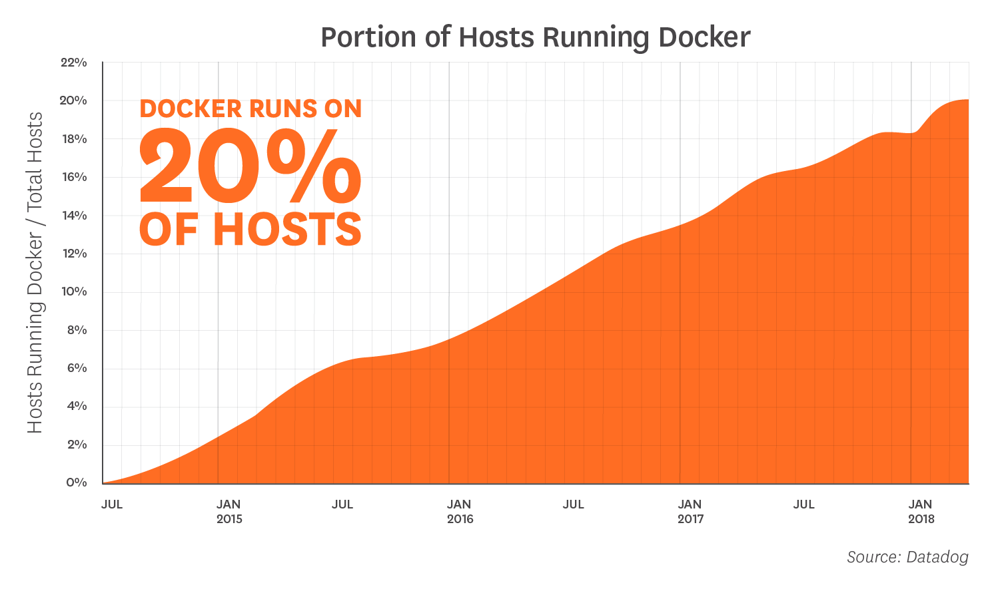
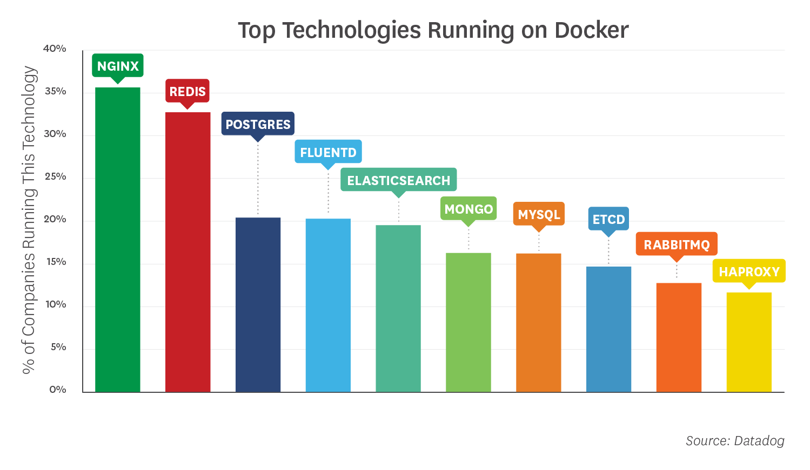

Docker deep-dive
Fact
Setting Expectation

What's the hype about containerization?
Rise of cloud native
- Provides Scalability
- Provides Isolation and security
- Provides predictable execution
As VMs were not very scalable, cloud community was looking for some new solutions. Meanwhile around 2002-2007 linux kernel was getting equipped with Namespace and cgroups.
Evolution of linux containersFirst experiment with lunux kernel features
Then how container aka. Docker implements those
Let's dive in
Name + space ??
Lexmark[avik avik avik sourav sourav rajib]
DevOps[avik sourav rajib] Sales[avik sourav] Web[avik rajib]
- Java packages
- DNS hierarchy
- Directory structure
Linux namespaces
- Process id namespace
- Network namespace
- Mount namespace
- IPC namespace
- User namespace
- Cgroup namespace
- UTS namespace
Experiment
control groups
cgcreate, cgexec, cgdelete
Experiment
Business case
What is a container?
A container is a standard unit of software that packages up code and all its dependencies so the application runs quickly and reliably from one computing environment to another. >Docker
The word “container” doesn’t mean anything super precise. Basically there are a few new Linux kernel features (“namespaces” and “cgroups”) that let you isolate processes from each other. When you use those features, you call it “containers”. >Julia Evans